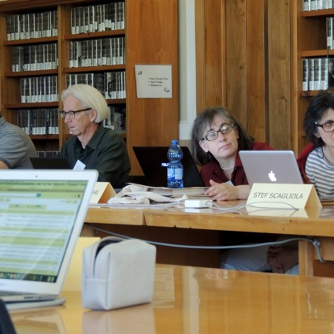

CLARIN in a nutshell
CLARIN stands for “Common Language Resources and Technology Infrastructure”.
It is a research infrastructure that was initiated from the vision that all digital language resources and tools from all over Europe and beyond are accessible through a single sign-on online environment for the support of researchers in the humanities and social sciences.
In 2012 CLARIN ERIC was established and took up the mission to create and maintain an infrastructure to support the sharing, use and sustainability of language data and tools for research in the humanities and social sciences. Currently CLARIN provides easy and sustainable access to digital language data (in written, spoken, or multimodal form) for scholars in the social sciences and humanities, and beyond. CLARIN also offers advanced tools to discover, explore, exploit, annotate, analyse or combine such data sets, wherever they are located. This is enabled through a networked federation of centres: language data repositories, service centres and knowledge centres, with single sign-on access for all members of the academic community in all participating countries. Tools and data from different centres are interoperable, so that data collections can be combined and tools from different sources can be chained to perform complex operations to support researchers in their work.
The CLARIN infrastructure is fully operational in many countries, and a large number of participating centres are offering access services to data, tools and expertise. At the same time, CLARIN continues to be constructed in some countries that joined more recently, and CLARIN’s datasets and services are constantly updated and improved. On the services page we show the services accessible at this moment and we explain how and by whom the various services can be accessed.
CLARIN Key Technologies
- It includes Data Grid technology to connect the repositories as being implemented in the DAM-LR pilot project and web services the various centres provide;
- It builds on ideas launched by the Digital Library community to create Live Archives, and will further such initiatives;
- It incorporates, and contributes to, Semantic Web technology to overcome the structural and semantic encoding problems;
- It incorporates advanced multi-lingual language processing technology that supports cultural and linguistic integration.
Overall Organizational Framework
- It includes Data Grid technology to connect the repositories as being implemented in the DAM-LR pilot project and web services the various centres provide;
- It builds on ideas launched by the Digital Library community to create Live Archives, and will further such initiatives;
- It incorporates, and contributes to, Semantic Web technology to overcome the structural and semantic encoding problems;
- It incorporates advanced multi-lingual language processing technology that supports cultural and linguistic integration.
| Acronym | Topic (with link to factsheet) | Leading Partner | Duration | CLARIN’s PMs |
|---|---|---|---|---|
| linguistic | Enhancing CLARIN’s technical hub, office, partnerships, outreach, and governance | CLARIN ERIC | 2015-09– 2017-08 | 103 |
| EUDAT2020 | Preserve, find, access, and process research data in a trusted environment, as part of a Collaborative Data | CSC | 2015-03–2018-02 | 58 |
| EUROPEANA-DSI | Develop Europeana as a Digital Service Infrastructure (DSI-2) | Europeana Foundation | 2016-07-2017-08 | 4 |
- 491-753-1072
- waters_rory@yahoo.com
- 239 Cayla Pines Apt. 196 239 Cayla Pines Apt. 196